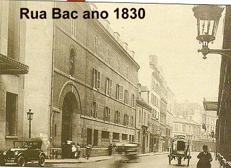
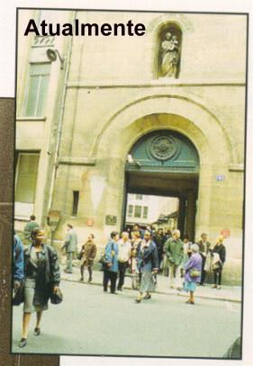
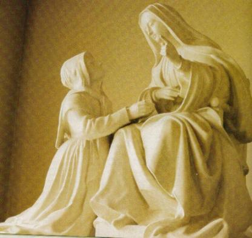
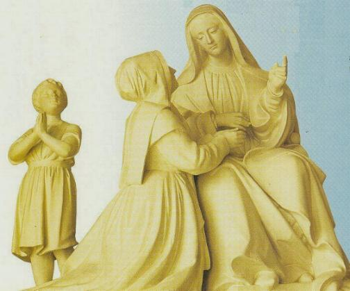
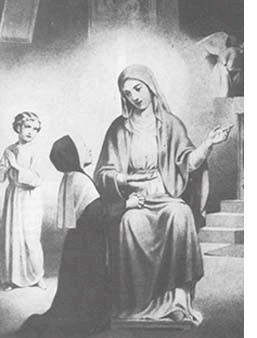
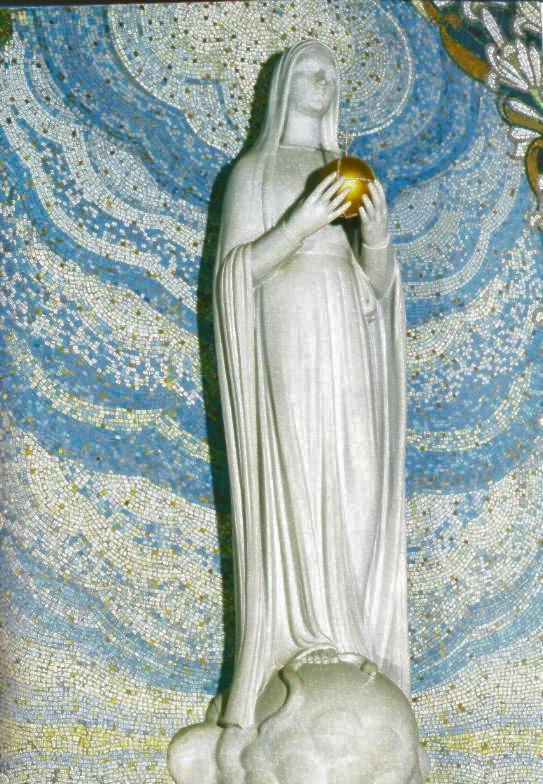
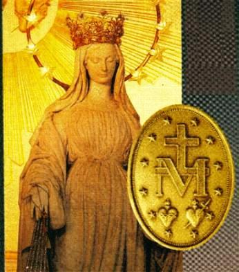
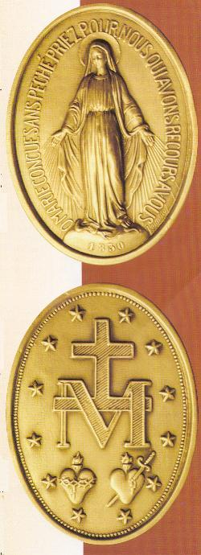

Passando pela fase do “discernimento”, Catarina Labouré foi admitida no Noviciado das Filhas da Caridade no dia 21 de Abril de 1830, sendo enviada a Paris e permaneceu estudando no Seminário da Instituição Religiosa, na Casa Mãe, situada na Rua “du Bac” nº 140.


O tempo de formação foi marcado por acontecimentos especiais, sobre os quais, com simplicidade ela descreve ao seu confessor, que durante um bom tempo não acreditava nela e quase não dava atenção às suas palavras.
No domingo, dia 25 de Abril, poucos dias após sua chegada ao Seminário, participou juntamente com todas as Irmãs, da grande Festa da Transladação das Relíquias de São Vicente de Paulo. Durante a Revolução Francesa de 1789, as relíquias do Santo tinham sido escondidas com receio de profanações. Por isso, o Arcebispo de Paris conhecendo o prestigio daquele que o povo chamava de “pai dos pobres” , quis prestar uma homenagem solene a São Vicente, reanimando a fé dos parisienses. Foi uma imensa procissão que saiu do arcebispado, atravessou Paris e chegou à Capela do Mosteiro dos Padres da Missão, à Rua de Sèvres, 95, chamada Capela de São Lázaro. A multidão se comprimia nas ruas à sua passagem e avidamente e com muito respeito, todos queriam participar do cortejo.
Na Capela das Irmãs, na Casa Mãe, havia
no Altar uma pequena urna contendo relíquias de São Vicente de Paulo. 
- Primeiro o “branco”, “que anunciava a paz, a calma, a inocência, a união”
, conforme o entendimento de Catarina.
No Antigo e Novo Testamento, a "paz"
é característica essencial dos tempos messiânicos, é o dom de DEUS
por excelência à humanidade, que nos é transmitida pelo CRISTO Ressuscitado.
(Lc 24, 36)(Jo 20, 19)(Jo 20,26)
- O segundo coração apareceu na “cor vermelha de fogo”. O “conceito de fogo”, conforme Catarina é “que deve acender a caridade nos corações”. O fogo é um dos símbolos da presença e da ação de DEUS na história da humanidade (lembrar Moisés e a sarça ardente no monte Horeb, Êxodo 3,1-6; espécie de línguas de fogo em Pentecostes, Atos dos Apóstolos 2,3).
Entretanto, Catarina pensa explicitamente na Companhia das Filhas da Caridade, na qual se preparava para entrar. Compreende que a Instituição deveria “se renovar” , converter-se a uma existência com prática mais consistente e perseverante do Evangelho, divulgando-o por todas as partes, “até os confins do mundo”, a fim de testemunhar o “amor” que deve ser a sua lei, sobretudo para com os pobres, a exemplo de São Vicente de Paulo.
- O terceiro coração apareceu “vermelho-escuro”, com uma conotação evidente de “desgraça e sofrimento”. O “coração de São Vicente de Paulo estava aflito, à vista das desgraças que iam se abater sobre a França”, explica à vidente. Poderíamos relembrar as revoluções de 1830, de 1848 e de 1871. Mas o Santo não se referia somente a aqueles sangrentos e tristes episódios. A sensibilidade pelos sofrimentos da humanidade de um modo geral e o convite a uma “profunda e sincera compaixão” por todos que sofrem, é também componente da mensagem fundamental de São Vicente.

Afirmou Catarina: “Eu era favorecida por outra graça muito especial, de ver NOSSO SENHOR no Santíssimo Sacramento. Eu O vi durante todo o tempo de meu Seminário, com exceção das vezes em que a dúvida envolvia o meu coração. Nesses dias, nada via, porque procurava mentalmente aprofundar-me em indagações sobre este mistério e temia enganar-me”.
È necessária explicar que Catarina não duvidava do fenômeno sobrenatural da “transubstanciação” que acontece na Santa Missa durante a Consagração. O ESPÍRITO SANTO atua no momento das orações do sacerdote celebrante, transformando o pão e o vinho no Corpo, Sangue, Alma e Divindade de NOSSO SENHOR JESUS CRISTO, mantendo as mesmas aparências exteriores das espécies, ou seja, mantendo as aparências do pão e do vinho. Ela não duvidava que JESUS está realmente presente na Hóstia e no Vinho Consagrado. A dúvida de Catarina nascia de sua ignorância, na pobreza dos seus costumes, na sua simplicidade pessoal e na grandeza de sua humildade. Naqueles dias “escuros de dúvidas”, ela pensava ser uma ilusão de ótica, de não estar vendo JESUS na Eucaristia, de ver apenas uma imagem fictícia desenhada por sua mente, porque não se sentia merecedora daquela graça tão especial. “Como poderia ela, uma ignorante que mal sabia escrever e falar, ter a pretensão de ver JESUS no Santíssimo Sacramento”? Estas eram as suas dúvidas!
Catarina levava uma vida dedicada ao trabalho e a oração. Sentia-se muito feliz, mas possuía um imenso desejo de ver NOSSA SENHORA, a quem se dedicou desde criança com súplicas e fervorosas orações.
No dia 18 de Julho de 1830, Irmã Marta, a Diretora do Seminário, fez uma instrução sobre a devoção de São Vicente de Paulo a VIRGEM MARIA.
À noite, ao se deitar, Catarina teve um forte
pressentimento: NOSSA SENHORA virá visitá-la esta noite. O fato se 
A Aparição aconteceu assim:
“As 11h30 da noite, ouvi que me chamavam pelo nome: Irmã Labouré, Irmã Labouré. Acordei, olhei para o lado de onde vinha a voz, que era do lado da porta. Afastei a cortina de minha cama e vi um menino, vestido de branco, com idade de 4 a 5 anos, que me disse: Vinde à Capela. A SANTÍSSIMA VIRGEM vos espera. Logo me lembrei que alguém poderia nos ouvir. O menino respondeu: Fique tranquila, são 23 horas e 30 minutos, todas as Irmãs dormem profundamente. Vinde, eu vos espero. Vesti-me as pressas e dirigi-me para o lado onde o menino estava de pé, junto a cabeceira da minha cama. Eu o segui, tendo-o sempre ao meu lado esquerdo. Ele espalhava claridade por onde passava e isso me deixava admirada. Mas muito maior foi a minha surpresa ao chegar a Capela: a porta se abriu com um leve toque de ponta dos dedos do menino e todas as velas da Capela estavam acesas, como acontecia na Santa Missa de Natal. No entanto, eu não via a VIRGEM SANTÍSSIMA. O menino conduziu-me ao santuário, junto a cadeira do Padre Diretor. Aí me ajoelhei e o menino ficou de pé. Como me parecia longa a espera! (Porque na sua ingênua simplicidade imaginou que se NOSSA SENHORA demorasse a chegar, alguma Irmã poderia presenciar a Aparição e espalhar na Comunidade) Olhei para a tribuna para ver se as Irmãs de plantão noturno estavam por ali. Enfim chegou o momento! O menino avisou-me dizendo: Eis a SANTÍSSIMA VIRGEM! Ouvi um leve ruído, como se fosse o suave arrastar de um vestido de seda no assoalho. NOSSA SENHORA foi assentar-se numa cadeira no Altar, ao lado do Evangelho. Olhando para a SANTÍSSIMA VIRGEM, corri apressadamente e ajoelhei aos pés Dela, ao lado da cadeira apoiando-me Nela. Foi o momento mais feliz da minha vida! Conversamos bastante e Ela me deu preciosos conselhos, ensinando-me como deveria proceder nas horas de sofrimento e apontando o sacrário com a mão esquerda, me disse que diante do SENHOR eu deveria sempre abrir o meu coração para alcançar todas as consolações que necessitasse. Perguntei-lhe sobre as coisas que tinha visto e Ela me deu minuciosas explicações. Não sei quanto tempo fiquei com a VIRGEM, mas quando Ela partiu, vi alguma coisa como se estivesse apagando, como uma sombra que seguia pelo mesmo caminho por onde Ela havia chegado. Levantei-me e vi o menino onde o deixara. Ele me disse: Ela já partiu. Voltamos para o dormitório pelo mesmo caminho, estando ele a minha esquerda sempre iluminando por onde devíamos passar. Creio que este menino era o meu Anjo da Guarda que tomara a forma humana. Desde criança eu o tinha invocado diversas vezes, e lhe pedi que alcançasse de DEUS este inesquecível favor de ver nossa MÃE SANTÍSSIMA. Ele estava vestido de branco e irradiava uma luz resplandecente. Quando cheguei a minha cama ele desapareceu. O relógio da Comunidade soava duas horas da madrugada. Deitei mas não consegui dormir”.

“Minha filha, o bom DEUS quer encarregá-la de uma missão. Para cumpri-la, haveis de sofrer muito, mas vencereis todos os obstáculos, suportando tudo para a maior glória do SENHOR. Será atormentada e contestada ao comunicardes a quem está encarregado de vos dirigir espiritualmente. Mas não vos faltará a graça Divina. Deverá descrever tudo o que verás. Será inspirada nas suas orações”.
“Os tempos são maus. Desgraças vão cair sobre a França; o mundo inteiro será perturbado por desgraças de toda sorte... Virá um momento em que o perigo será tão grande, que tudo parecerá perdido! A Cruz de CRISTO será desprezada, o sangue correrá nas ruas, o mundo inteiro estará mergulhado na tristeza... Mas não se esqueça de vir a este Altar. Aqui as graças serão abundantes para os que as pedirem com confiança e fervor. Elas serão concedidas a todos, aos grandes e aos pequenos”...
Depois Catarina mencionou as palavras que a VIRGEM MARIA lhe disse a respeito do Padre José Aladel que recebia as suas confidências:
“A SANTA VIRGEM quer que o Padre Aladel organize uma Associação. Ele será o fundador e diretor. Será uma Confraria de Filhas de Maria. NOSSA SENHORA prometeu enviar-lhe muitas graças para a realização da missão”.
Depois destes acontecimentos, a vida de Catarina seguiu o mesmo ritmo de cada dia, com o perseverante e fiel cumprimento de todas as suas obrigações. E confirmando os anúncios da VIRGEM MARIA, durante os últimos dias de Julho aconteceram violentos tumultos que provocaram a queda do Rei da França, Carlos X. O confessor de Catarina ficou transtornado, porque começou a compreender que as palavras de Catarina estavam se concretizando e que, portanto, as coisas que ela lhe disse eram verdadeiras e não fruto da imaginação. Embora ele não se esquecia da simplicidade e da pouca instrução de Catarina que eram elementos negativos, e deixavam a sua alma completamente indecisa e sem coragem para assumir uma decisão.
Sábado, dia 27 de Novembro de 1830, às 17 horas
e 30 minutos, a Irmã estava sozinha na Capela da Casa Mãe, fazendo 
“Pareceu-me ouvir um ruído do lado
da tribuna, perto do quadro de São José, como aquele mesmo ruído de um vestido
de seda tocando o assoalho de madeira. Olhando naquela direção vi a SANTÍSSIMA
VIRGEM MARIA próxima ao quadro. Estava linda! Vestia uma roupa branca, comprida
e tinha na cabeça um véu branco que descia até a orla do vestido. Por baixo do
véu percebi os seus cabelos separados em bandos. O seu rosto estava descoberto e
era de admirável beleza, que não ouso descrever. Os pés apoiavam-se sobre um
globo, ou melhor, sobre a metade dele. E também, segurava nas mãos um globo
inteiro, representando o mundo, o nosso planeta. Com movimento suave, o levantou
com as duas mãos, sem nenhum esforço, à altura do peito e tinha os olhos
voltados para o Céu”.
“Depois, desaparecendo o globo terrestre, percebi anéis com pedras brilhantes nos
seus dedos, sendo umas maiores e mais belas que as outras. Delas saiam raios
indescritíveis de uma beleza invulgar, sendo que das pedras maiores os raios eram
mais brilhantes e luminosos. Esses raios iam se alargando à medida que desciam sobre
o globo embaixo de seus pés, a ponto de não me deixarem ver os pés Dela. Enquanto
eu me embevecia em contemplá-la, NOSSA SENHORA abaixou os olhos fixando-os
em mim. Ouvi uma voz suave e quase melodiosa que me disse: Este globo que
vistes representa o mundo inteiro, onde também está a França e cada pessoa em
particular. Neste momento não sei como exprimir, porque eram maravilhosos, belos
e deslumbrantes aqueles raios que saiam dos anéis das mãos da SANTÍSSIMA
VIRGEM e se espalhavam sobre o globo. Ela continuou falando: Esses raios
são o símbolo das "Graças" que derramo sobre as pessoas que solicitam. A MÃE
DE DEUS me fez compreender o quanto lhe são agradáveis aos orações e sacrifícios
feitos por todos aqueles que invocam a sua proteção e auxílio. A SANTA VIRGEM revelou
a sua ilimitada generosidade aos que buscam a sua maternal ajuda, expressando
a sua alegria e satisfação em conceder-lhes o que suplicam para as suas vidas.
Neste momento, não sei onde estava, nem onde não estava... Meu júbilo era tão
profundo que me dava a impressão de existir ali somente a VIRGEM e eu”.

Poucos instantes depois, o quadro oval girou e no verso Catarina viu a letra M encimada por uma pequena Cruz, e em baixo, os Sagrados Corações de JESUS e de MARIA.
Na sequência dos dias, envolvida pela simplicidade, nasceu uma dúvida em Catarina, que atormentava o seu espírito, a levando questionar mentalmente se deveria ou não, também colocar alguma frase ou uma jaculatória no verso da Medalha, onde estavam os dois Sagrados Corações. Isto porque na frente, onde está à imagem da MÃE DE DEUS apareceu à jaculatória: “Ó MARIA concebida sem pecado, rogai por nós que recorremos a vós”.
Na continuidade, aconteceu o seguinte: “Um dia, durante a meditação, rezando na Capela, pareceu-me ouvir nitidamente uma voz que dizia: não se preocupe: o M e os Dois Corações dizem tudo”.
Numa terceira Aparição, no mês de Dezembro, cuja data ela não precisou com convicção, MARIA lhe apareceu e confirmou a missão, mandando que fosse cunhada a Medalha e distribuída para a Cristandade.
O Padre Aladel continuava indeciso e cheio de dúvida! Tinha momentos que acreditava, mas na verdade não tinha muita disposição para atender aos pedidos de NOSSA SENHORA porque ainda não tinha uma fé substanciosa nas narrativas da Irmã.
E ele ficou mais perplexo e confuso, quando no inicio do ano 1831 Catarina observando a sua descrença, pediu-lhe para não mais pensar “naquelas imaginações” que ela lhe tinha confidenciado.
Aliás, o tempo do Seminário na Casa Mãe tinha acabado e Catarina deixou a Rua “du Bac”.
No Brasil, como em muitos países NOSSA SENHORA DA MEDALHA MILAGROSA é conhecida com o nome de NOSSA SENHORA DAS GRAÇAS.

A “Medalha Milagrosa” que a VIRGEM MARIA mandou a Irmã Catarina Labouré cunhar em 1830, tem na frente à imagem de NOSSA SENHORA DAS GRAÇAS como habitualmente conhecemos, derramando de suas mãos abertas “raios de Graças” sobre toda humanidade. No verso da Medalha, encontramos outro apelo, que na verdade é um discreto e carinhoso convite a humanidade, para cultivar a “Devoção Conjunta aos Dois Sagrados Corações de JESUS e de MARIA”. Aparece um “M” do nome “MARIA”, que é uma alusão ao reconhecimento que todas as gerações devem ter à nossa MÃE SANTÍSSIMA por sua permanente intercessão junto a DEUS em beneficio de todos nós. Isto, lembrando o auxílio, o zelo e os preciosos cuidados que maternalmente e repleta de amor, Ela sempre dedica a todos os seus filhos, principalmente àqueles que buscam a sua inefável e tão querida proteção. Em cima do “M” temos a gloriosa “CRUZ DE CRISTO”, que assumindo os pecados da humanidade, nela consolou o PAI ETERNO e redimiu todas as gerações, abrindo as portas da Salvação para todos, independentemente de nossa vontade pessoal, num gesto supremo e sublime, de Sua Caridade Divina. Embaixo do “M” de “MARIA”, estão os “Dois Corações”, representando o “Sagrado Coração de JESUS” e o “Imaculado Coração de MARIA”. O “Coração de JESUS” está envolto por uma coroa de espinhos, nos recordando todos os pecados e transgressões praticados contra Ele; o “Coração de MARIA” está atravessado por um punhal, que representa a decepção e a dor lancinante sentida por nossa MÃE, pelas maldades e por todos os crimes que mancham e destroem as almas, afastando-as de DEUS. Então, na riqueza de benefícios da Medalha encontramos também esta apresentação que pela primeira vez vem sugerir a todos nós, a necessária e filial preocupação de consolar com nossas orações e nossa vida, os “Dois Sagrados Corações Unidos no Amor” , colocando em prática uma carinhosa Devoção conjuntamente aos “Corações de JESUS e de MARIA”.